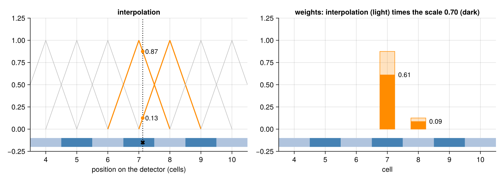
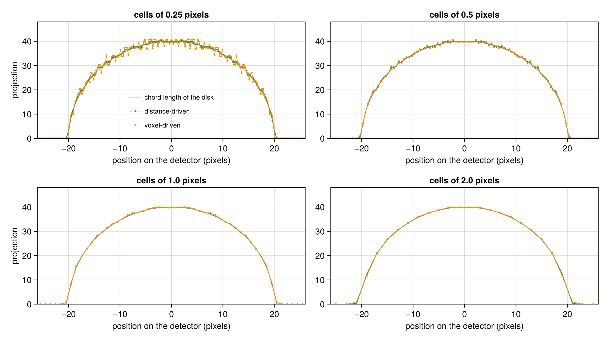

Voxel-Driven Method
Siddon's Method, Joseph's Method and the Distance-Driven Method start from a data element and find the voxels it sees: each computes one row of the System Matrix at a time. The voxel-driven method starts from a voxel and finds the detector cells that see it: it computes one column at a time. In every view, the center of the voxel is projected from the source onto the detector, and the voxel contributes to the cells next to that point, with weights from linear interpolation between the cells. De Man & Basu (2004) and Miao (2013) call it the pixel-driven method, Zhuang et al. (1994) bilinear interpolation. Implementations of filtered back projection usually back project this way (De Man & Basu 2004).
using CTOperatorsOne pixel in 2D
The figure shows a fan beam with a 2D image of 8 × 8 pixels and one pixel (orange). The ray from the source (black dot) through the center of the pixel (dotted) meets the detector at the cross. The pixel contributes only to the two cells on either side of the cross, the nearer one more (darker); all other cells of the view get nothing from it. The numbers are the weights of the pixel in these two cells, as the projector computes them: the forward projection of an image that is 1 in this pixel and 0 elsewhere. The slider rotates the scan in steps of 15°: the cross moves along the detector, and the weights move with it from cell to cell.
Each weight is the product of two factors, shown along the detector in the next figure for the first view of the slider (weights 0.61 and 0.09). The first is the interpolation (left): every cell has a tent function that is 1 at its own center and falls to 0 at the centers of its neighbors. Read off at the cross, the two tents give 0.87 for the nearer cell and 0.13 for the other one; away from the edges of the detector they add up to 1. The second factor is a scale that is the same for both cells, here 0.70 (right): it turns the interpolation into weights that model line integrals, and the section on the weights below derives it.

In the terms of the System Matrix page, the image model is a point mass at the center of each voxel, and the detector model spreads it over the nearest cells by linear interpolation.
The weights
In 3D the projected center lies at a position $(c_u, c_v)$ on the detector of view $k$, in cell units (the cell centers at integers). The voxel $j$ contributes to the 2 × 2 cells around that point, with the bilinear interpolation weights times a scale $s_{jk}$ that depends on the voxel and the view:
\[a_{ij} = s_{jk} \, (1 - |c_u - i_u|) \, (1 - |c_v - i_v|)\]
for the data elements $i = (i_u, i_v, k)$ with $|c_u - i_u| < 1$ and $|c_v - i_v| < 1$. Cells outside the detector and cells masked by the ray mask (see Use Masks) are left out. The back projection uses the same weights: it is the exact adjoint.
For a voxel whose four cells are all on the detector, the interpolation weights add up to 1. The scale decides what the forward projection means. With the default scale (LineIntegralScale), the forward projection approximates the mean of the line integrals over each cell, the detector model of the distance-driven method. De Man & Basu (2004) note that for line integrals the pixel-driven projection needs additional weight factors, among them the secant of the angle of the ray and the ratio of pixel size to cell size, but give no formula; the following derivation, for fan and cone beams, is ours, a change of variables.
A small solid angle $\mathrm{d}\Omega$ around a ray from the source covers the area $\mathrm{d}A = R^2 \, \mathrm{d}\Omega / \cos\varphi$ on the detector, where $R$ is the distance from the source to the detector along the ray and $\varphi$ the angle between the ray and the normal of the detector. Between the distances $r$ and $r + \mathrm{d}r$ from the source, the same solid angle holds the volume $\mathrm{d}V = r^2 \, \mathrm{d}\Omega \, \mathrm{d}r$. Integrating the line integrals $p$ over an area of the detector therefore integrates the image $\mu$ over the volume that the rays cross, with a factor:
\[\int p \, \mathrm{d}A = \int \mu \, \frac{R^2}{r^2 \cos\varphi} \, \mathrm{d}V.\]
A voxel of volume $V$ and value $x_j$ adds $x_j V (R/r)^2 / \cos\varphi$ to this integral, where $R/r$ is its magnification. The voxel-driven method puts all of it into the cells next to the projected center: the means over these cells, times the cell area $a$ and the interpolation weights, must add up to this amount. Since the interpolation weights add up to 1, the scale is
\[s_{jk} = \frac{V}{a} \, \frac{(R/r)^2}{\cos\varphi},\]
evaluated for the ray through the voxel center. For a parallel beam the same argument with a tube of parallel rays instead of a cone gives $\mathrm{d}A = \mathrm{d}A_\perp / \cos\varphi$ and $\mathrm{d}V = \mathrm{d}A_\perp \, \mathrm{d}r$, where $\mathrm{d}A_\perp$ is the cross section of the tube: the scale without the magnification, $R/r = 1$.
A 2D image is one voxel thick in z. Within its plane the same argument in one dimension less applies: a fan angle $\mathrm{d}\theta$ covers the length $R \, \mathrm{d}\theta / \cos\varphi$ on the detector and the area $r \, \mathrm{d}\theta \, \mathrm{d}r$ in the image, so the scale is $A \, (R/r) / (\Delta u \cos\varphi)$ with the pixel area $A$ and the cell width $\Delta u$. Across the plane, every detector row whose ray passes within the thickness of the image at the position of the pixel gets the full weight, as in the distance-driven method; the interpolation weights of a pixel then add up to 1 within each such row.
The scale is a keyword of the projector. UnitScale leaves the interpolation weights alone. A scale of your own is a subtype of AbstractVoxelScale with a method of CTOperators.voxel_scale, which gets the view, the voxel grid and the CTOperators.DetectorHit of the voxel center (position, magnification, density of the projection), and runs inside the kernels:
struct MagnificationScale <: AbstractVoxelScale end
CTOperators.voxel_scale(::MagnificationScale, geometry, k, grid, hit) = hit.magnification^2
op = VoxelDrivenProjector(image, geometry; scale=MagnificationScale())Cells smaller than the projected voxels
A voxel puts its whole contribution into the cells next to its projected center. Neighboring voxels of an image row project at most one voxel apart (times the magnification). With cells much smaller than that, some cells lie next to several projected centers and others next to none, and the projection gets a pattern at the scale of the cells (Miao 2013, section 2.3.1; De Man & Basu 2004 call these high-frequency artifacts). Miao (2013, section 2.4.1) checks this with the projection of a uniform disk in one fan-beam view. Here the same kind of check in one parallel-beam view at 0.3 radians: a uniform disk of radius 20 pixels, for cells of 0.25 to 2 pixels, with the distance-driven projection and the chord lengths of the disk for comparison:

The relative difference between the voxel-driven and the distance-driven projection in this example (the distance-driven projection is itself an approximation, not the exact answer):
[(cell=du, difference=round(disk_difference(du); sigdigits=2)) for du in (0.25, 0.5, 1.0, 2.0)]4-element Vector{@NamedTuple{cell::Float64, difference::Float64}}:
(cell = 0.25, difference = 0.037)
(cell = 0.5, difference = 0.012)
(cell = 1.0, difference = 0.00084)
(cell = 2.0, difference = 0.0072)For cells smaller than the pixels, the difference grows as the cells shrink, and the figure shows the pattern. With cells of 2 pixels the two projections differ mostly at the edge of the disk. In a cone beam the size to compare is the cell size divided by the magnification.
Coverage of the voxels
The back projection works the other way round: every voxel reads the data at its own projected center, so no voxel is missed, whatever the cell size. For a parallel beam the back projection of a view of ones is the same for every voxel that projects onto the detector; Comparing Projectors shows this coverage next to the other methods. In the 2D evaluation of Zhuang et al. (1994) (parallel beam, a Shepp-Logan phantom, the L1 error), bilinear interpolation gave the smallest back-projection error of the four methods they compared.
Properties
- Exact adjoint. Forward and back projection use the same weights.
- Back projection without atomic additions. Every voxel is written once, so repeated back projections are equal.
- Forward projection with atomic additions into the data, in no fixed order: two forward projections of the same image can differ in the last digits, and data stored in a lower precision collect the sums in that precision (see Choose the Precision).
- Needs a detector. The method works with
ConeBeam,ArcConeBeamandParallelBeamgeometries, not with aRayListand not with aMultiRay. - No fused normal operator. The Normal Operator is fused for the projectors that run one thread per data element; here a thread owns a voxel, and
normalOperatorreturns the generic normal operator of LinearOperatorCollection.jl.
Implementation
- One thread per voxel, within the bounding box of the image mask, and a loop over the views.
- The projected center comes from
CTOperators.project_point, the inverse ofCTOperators.cell_ray, for flat and curved detectors and parallel beams. It also returns the magnification and the density $(R/r)^2 / (a \cos\varphi)$ that the scale uses. - The cells (2 × 2 in 3D; two per row for a 2D image) are visited with the same actions as the voxels of the ray-driven projectors, applied to the data: the back projection gathers, the forward projection scatters. Masked cells are skipped.
References
- B. De Man, S. Basu, "Distance-driven projection and backprojection in three dimensions", Phys. Med. Biol. 49(11), 2463–2475, 2004 (the pixel-driven method, its weight factors and artifacts).
- C. Miao, "Comparative studies of different system models for iterative CT image reconstruction", master's thesis, Wake Forest University, 2013.
- W. Zhuang, S. S. Gopal, T. J. Hebert, "Numerical evaluation of methods for computing tomographic projections", IEEE Trans. Nucl. Sci. 41(4), 1660–1665, 1994.
This page was generated using Literate.jl.